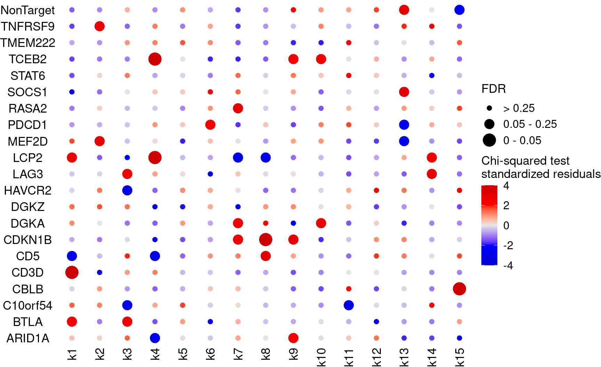
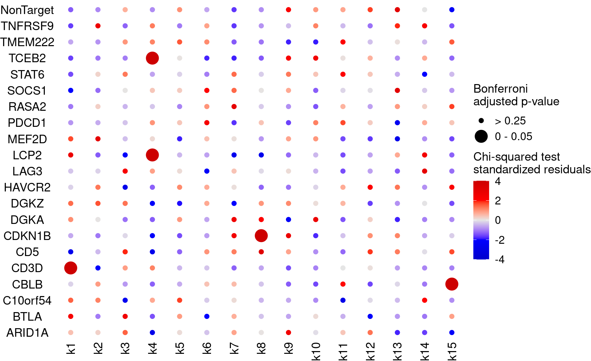
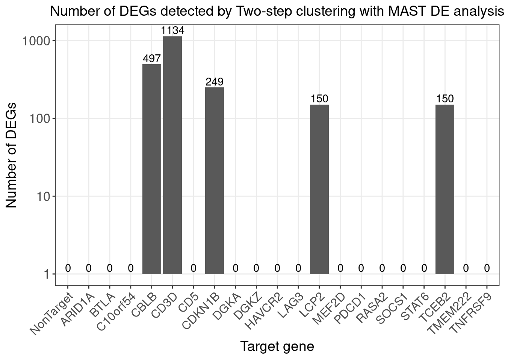
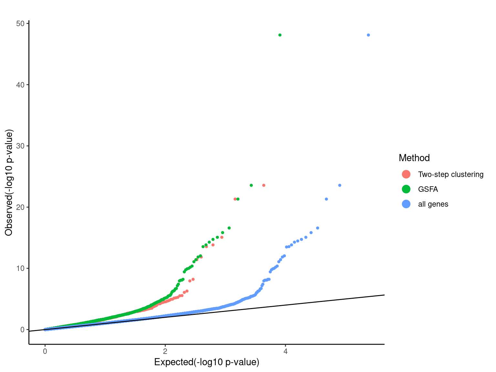
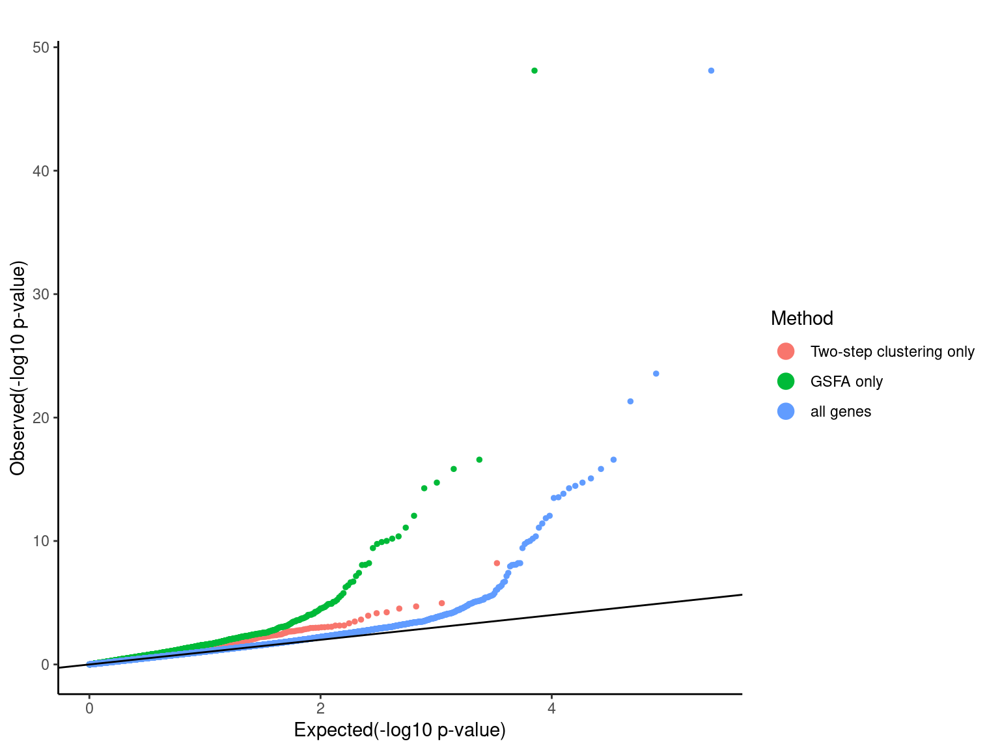

Two step clustering analysis on CD8+ T Cell (stimulated) CROP-seq data
Kaixuan Luo
2022-08-10
Last updated: 2022-08-31
Checks: 7 0
Knit directory: GSFA_analysis/
This reproducible R Markdown analysis was created with workflowr (version 1.7.0). The Checks tab describes the reproducibility checks that were applied when the results were created. The Past versions tab lists the development history.
Great! Since the R Markdown file has been committed to the Git repository, you know the exact version of the code that produced these results.
Great job! The global environment was empty. Objects defined in the global environment can affect the analysis in your R Markdown file in unknown ways. For reproduciblity it’s best to always run the code in an empty environment.
The command set.seed(20220524) was run prior to running the code in the R Markdown file. Setting a seed ensures that any results that rely on randomness, e.g. subsampling or permutations, are reproducible.
Great job! Recording the operating system, R version, and package versions is critical for reproducibility.
Nice! There were no cached chunks for this analysis, so you can be confident that you successfully produced the results during this run.
Great job! Using relative paths to the files within your workflowr project makes it easier to run your code on other machines.
Great! You are using Git for version control. Tracking code development and connecting the code version to the results is critical for reproducibility.
The results in this page were generated with repository version 2d2298a. See the Past versions tab to see a history of the changes made to the R Markdown and HTML files.
Note that you need to be careful to ensure that all relevant files for the analysis have been committed to Git prior to generating the results (you can use wflow_publish or wflow_git_commit). workflowr only checks the R Markdown file, but you know if there are other scripts or data files that it depends on. Below is the status of the Git repository when the results were generated:
Ignored files:
Ignored: .Rhistory
Ignored: .Rproj.user/
Untracked files:
Untracked: Rplots.pdf
Untracked: analysis/check_Tcells_datasets.Rmd
Untracked: analysis/interpret_gsfa_LUHMES.Rmd
Untracked: analysis/interpret_gsfa_TCells.Rmd
Untracked: analysis/spca_LUHMES_data.Rmd
Untracked: analysis/test_seurat.Rmd
Untracked: code/gsfa_negctrl_job.sbatch
Untracked: code/music_LUHMES_Yifan.R
Untracked: code/plotting_functions.R
Untracked: code/run_gsfa_2groups_negctrl.R
Untracked: code/run_gsfa_negctrl.R
Untracked: code/run_music_LUHMES.R
Untracked: code/run_music_LUHMES_data.sbatch
Untracked: code/run_sceptre_LUHMES_data.sbatch
Untracked: code/run_sceptre_Tcells_stimulated_data.sbatch
Untracked: code/run_sceptre_Tcells_unstimulated_data.sbatch
Untracked: code/run_spca_LUHMES.R
Untracked: code/run_spca_TCells.R
Untracked: code/run_unguided_gsfa_LUHMES.R
Untracked: code/run_unguided_gsfa_LUHMES.sbatch
Untracked: code/run_unguided_gsfa_Tcells.R
Untracked: code/run_unguided_gsfa_Tcells.sbatch
Untracked: code/sceptre_LUHMES_data.R
Untracked: code/sceptre_Tcells_stimulated_data.R
Untracked: code/sceptre_Tcells_unstimulated_data.R
Untracked: code/seurat_sim_fpr_tpr.R
Untracked: code/unguided_GFSA_mixture_normal_prior.cpp
Unstaged changes:
Modified: analysis/sceptre_LUHMES_data.Rmd
Modified: code/run_sceptre_cropseq_data.sbatch
Modified: code/sceptre_analysis.R
Note that any generated files, e.g. HTML, png, CSS, etc., are not included in this status report because it is ok for generated content to have uncommitted changes.
These are the previous versions of the repository in which changes were made to the R Markdown (analysis/twostep_clustering_TCells_data.Rmd) and HTML (docs/twostep_clustering_TCells_data.html) files. If you’ve configured a remote Git repository (see ?wflow_git_remote), click on the hyperlinks in the table below to view the files as they were in that past version.
| File | Version | Author | Date | Message |
|---|---|---|---|---|
| Rmd | 2d2298a | kevinlkx | 2022-08-31 | added qqplots for combined results |
| html | 104e391 | kevinlkx | 2022-08-25 | Build site. |
| Rmd | a27762b | kevinlkx | 2022-08-25 | added qqplots |
| html | 16d9226 | kevinlkx | 2022-08-12 | Build site. |
| Rmd | 717bb32 | kevinlkx | 2022-08-12 | added more descriptions |
| html | d51d6c4 | kevinlkx | 2022-08-12 | Build site. |
| Rmd | 9c06976 | kevinlkx | 2022-08-12 | added more descriptions |
| html | ee884c4 | kevinlkx | 2022-08-11 | Build site. |
| Rmd | ce094cd | kevinlkx | 2022-08-11 | update intro formating and barplot for DEGs |
slurm setting
sinteractive --partition=broadwl --account=pi-xinhe --mem=50G --time=10:00:00 --cpus-per-task=8mkdir -p /project2/xinhe/kevinluo/GSFA/data
cp /project2/xinhe/yifan/Factor_analysis/shared_data/TCells_cropseq_data_seurat.rds \
/project2/xinhe/kevinluo/GSFA/data
cp /project2/xinhe/yifan/Factor_analysis/Stimulated_T_Cells/GSE119450_RAW/D1N/genes.tsv \
/project2/xinhe/kevinluo/GSFA/data/Stimulated_T_Cells_GSE119450_RAW_D1N_genes.tsv.gzLoad the data sets
CROP-seq datasets: /project2/xinhe/yifan/Factor_analysis/shared_data/LUHMES_cropseq_data_seurat.rds The data are Seurat objects, with raw gene counts stored in obj@assays$RNA@counts, and cell meta data stored in obj@meta.data. Normalized and scaled data used for GSFA are stored in obj@assays$RNA@scale.data, the rownames of which are the 6k genes used for GSFA.
Load packages
suppressPackageStartupMessages(library(data.table))
suppressPackageStartupMessages(library(Seurat))
suppressPackageStartupMessages(library(ComplexHeatmap))
suppressPackageStartupMessages(library(ggplot2))
require(reshape2)
require(dplyr)
require(ComplexHeatmap)
theme_set(theme_bw() + theme(plot.title = element_text(size = 14, hjust = 0.5),
axis.title = element_text(size = 14),
axis.text = element_text(size = 13),
legend.title = element_text(size = 13),
legend.text = element_text(size = 12),
panel.grid.minor = element_blank())
)
library(gridExtra)
source("code/plotting_functions.R")Set directories
data_dir <- "/project2/xinhe/kevinluo/GSFA/data/"
res_dir <- "/project2/xinhe/kevinluo/GSFA/twostep_clustering/Stimulated_T_Cells/stimulated"
dir.create(res_dir, recursive = TRUE, showWarnings = FALSE)Load input data
combined_obj <- readRDS(file.path(data_dir,"TCells_cropseq_data_seurat.rds"))Extract data for stimulated cells
metadata <- combined_obj@meta.data
table(metadata$orig.ident)
combined_obj@meta.data$condition <- "unstimulated"
combined_obj@meta.data$condition[which(endsWith(combined_obj@meta.data$orig.ident, "S"))] <- "stimulated"
# combined_obj.list <- SplitObject(combined_obj, split.by = "condition")
# combined_obj <- combined_obj.list$stimulated
combined_obj <- subset(combined_obj, subset = condition == "stimulated")
combined_obj
table(combined_obj@meta.data$orig.ident)
TCells_D1N TCells_D1S TCells_D2N TCells_D2S
5533 6843 5144 7435
An object of class Seurat
33694 features across 14278 samples within 1 assay
Active assay: RNA (33694 features, 1000 variable features)
2 dimensional reductions calculated: pca, umap
TCells_D1S TCells_D2S
6843 7435 Pre-processing
The steps below encompass the standard pre-processing workflow for scRNA-seq data in Seurat.
These represent the selection and filtration of cells based on QC metrics, data normalization and scaling, and the detection of highly variable features.
# The number of unique genes detected in each cell.
range(combined_obj$nFeature_RNA)
# The total number of molecules detected within a cell
range(combined_obj$nCount_RNA)
# The percentage of reads that map to the mitochondrial genome
range(combined_obj$percent_mt)[1] 973 5889
[1] 2602 39985
[1] 0.01762736 9.96515679# Visualize QC metrics as a violin plot
VlnPlot(combined_obj, features = c("nFeature_RNA", "nCount_RNA", "percent_mt"), ncol = 3)We filter cells that have more than 500 genes identified, as in the Shifrut et al. paper.
combined_obj <- subset(combined_obj, subset = nFeature_RNA > 500)Normalizing the data
combined_obj <- NormalizeData(combined_obj, normalization.method = "LogNormalize", scale.factor = 10000)Identification of highly variable features (feature selection)
Select a subset of features that exhibit high cell-to-cell variation in the dataset, by modeling the mean-variance relationship inherent in single-cell data.
Select the 1,000 most variable genes across cells, as in the Shifrut et al. paper.
combined_obj <- FindVariableFeatures(combined_obj, selection.method = "vst", nfeatures = 1000)Regress out total UMI counts per cell and percent of mitochondrial genes detected per cell and scaled to obtain gene level z-scores, as in the Shifrut et al. paper.
combined_obj <- ScaleData(combined_obj, vars.to.regress = c("nCount_RNA", "percent_mt"))
# combined_obj <- ScaleData(combined_obj, vars.to.regress = c("nCount_RNA", "percent_mt"), features = selected_gene_id)
dim(combined_obj[["RNA"]]@counts)
dim(combined_obj[["RNA"]]@data)
dim(combined_obj[["RNA"]]@scale.data)
saveRDS(combined_obj, file = file.path(res_dir, "TCells_stimulated_seurat_processed_data.rds"))Perform dimensional reduction
Perform PCA on the scaled data.
combined_obj <- readRDS(file.path(res_dir, "TCells_stimulated_seurat_processed_data.rds"))
combined_obj <- RunPCA(combined_obj, features = VariableFeatures(object = combined_obj))
ElbowPlot(combined_obj, ndims = 50)
| Version | Author | Date |
|---|---|---|
| ee884c4 | kevinlkx | 2022-08-11 |
Cluster the cells
Embed cells in K-nearest neighbor (KNN) graph using FindNeighbors() using the first 30 PCs, as in the Shifrut et al. paper Then apply the Louvain algorithm to find clusters using FindClusters() function with default resolution (0.8).
combined_obj <- FindNeighbors(combined_obj, dims = 1:30)
combined_obj <- FindClusters(combined_obj)
saveRDS(combined_obj, file = file.path(res_dir, "TCells_stimulated_seurat_clustered.rds"))Visualize the clusters using UMAP
combined_obj <- readRDS(file.path(res_dir, "TCells_stimulated_seurat_clustered.rds"))
cluster_labels <- Idents(combined_obj)
cluster_labels <- as.factor(as.numeric(as.character(cluster_labels))+1)
new_cluster_labels <- paste0("k", levels(cluster_labels))
names(new_cluster_labels) <- levels(combined_obj)
combined_obj <- RenameIdents(combined_obj, new_cluster_labels)
combined_obj <- RunUMAP(combined_obj, dims = 1:30)
DimPlot(combined_obj, reduction = "umap", label = TRUE)
| Version | Author | Date |
|---|---|---|
| ee884c4 | kevinlkx | 2022-08-11 |
Finding differentially expressed genes using MAST
combined_obj <- readRDS(file.path(res_dir, "TCells_stimulated_seurat_clustered.rds"))
cat("Run DE test using MAST...\n")
cat(length(levels(combined_obj)), "clusters.\n")
registerDoParallel(cores=n_cores)
ptm <- proc.time()
de.markers <- foreach(i=levels(combined_obj), .packages="Seurat") %dopar% {
FindMarkers(combined_obj, ident.1 = i, test.use = "MAST")
}
proc.time() - ptm
stopImplicitCluster()
saveRDS(de.markers, file = file.path(res_dir, "TCells_stimulated_seurat_MAST_DEGs.rds"))Associate perturbations with clusters
combined_obj <- readRDS(file.path(res_dir, "TCells_stimulated_seurat_clustered.rds"))
perturb_matrix <- combined_obj@meta.data[, 4:24]
cluster_labels <- Idents(combined_obj)
cluster_labels <- as.factor(as.numeric(as.character(cluster_labels))+1)
new_cluster_labels <- paste0("k", levels(cluster_labels))
names(new_cluster_labels) <- levels(combined_obj)
combined_obj <- RenameIdents(combined_obj, new_cluster_labels)
cluster_matrix <- matrix(0, nrow = nrow(perturb_matrix), ncol = length(levels(cluster_labels)))
cluster_matrix[cbind(1:nrow(perturb_matrix), cluster_labels)] <- 1
rownames(cluster_matrix) <- rownames(perturb_matrix)
colnames(cluster_matrix) <- new_cluster_labelsUse Chi-squared tests for the association of perturbations and clusters (2 x 2 tables)
summary_df <- expand.grid(colnames(perturb_matrix), colnames(cluster_matrix))
colnames(summary_df) <- c("perturb", "cluster")
summary_df <- cbind(summary_df, statistic = NA, stdres = NA, pval = NA)
for(i in 1:nrow(summary_df)){
dt <- table(data.frame(perturb = perturb_matrix[,summary_df$perturb[i]],
cluster = cluster_matrix[,summary_df$cluster[i]]))
chisq <- chisq.test(dt)
summary_df[i, ]$statistic <- chisq$statistic
summary_df[i, ]$stdres <- chisq$stdres[2,2]
summary_df[i, ]$pval <- chisq$p.value
}
summary_df$fdr <- p.adjust(summary_df$pval, method = "BH")
summary_df$bonferroni_adj <- p.adjust(summary_df$pval, method = "bonferroni")
saveRDS(summary_df, file = file.path(res_dir, "TCells_stimulated_seurat_guide_cluster_chisq_summary_df.rds"))
stdres_mat <- reshape2::dcast(summary_df %>% dplyr::select(perturb, cluster, stdres), perturb ~ cluster, value.var = "stdres")
rownames(stdres_mat) <- stdres_mat$perturb
stdres_mat$perturb <- NULL
fdr_mat <- reshape2::dcast(summary_df %>% dplyr::select(perturb, cluster, fdr), perturb ~ cluster, value.var = "fdr")
rownames(fdr_mat) <- fdr_mat$perturb
fdr_mat$perturb <- NULL
bonferroni_mat <- reshape2::dcast(summary_df %>% dplyr::select(perturb, cluster, bonferroni_adj),
perturb ~ cluster, value.var = "bonferroni_adj")
rownames(bonferroni_mat) <- bonferroni_mat$perturb
bonferroni_mat$perturb <- NULLPlot perturbation ~ cluster associations (show FDR)
KO_names <- rownames(fdr_mat)
dotplot_effectsize(t(stdres_mat), t(fdr_mat),
reorder_markers = c(KO_names[KO_names!="NonTarget"], "NonTarget"),
color_lgd_title = "Chi-squared test\nstandardized residuals",
size_lgd_title = "FDR",
max_score = 4,
min_score = -4,
by_score = 2) + coord_flip()
| Version | Author | Date |
|---|---|---|
| ee884c4 | kevinlkx | 2022-08-11 |
Plot perturbation ~ cluster associations (show Bonferroni adjusted p-values)
KO_names <- rownames(bonferroni_mat)
dotplot_effectsize(t(stdres_mat), t(bonferroni_mat),
reorder_markers = c(KO_names[KO_names!="NonTarget"], "NonTarget"),
color_lgd_title = "Chi-squared test\nstandardized residuals",
size_lgd_title = "Bonferroni\nadjusted p-value",
max_score = 4,
min_score = -4,
by_score = 2) + coord_flip()
| Version | Author | Date |
|---|---|---|
| ee884c4 | kevinlkx | 2022-08-11 |
Find DE genes for each cluster and assign DE genes to associated perturbations
First, find DE genes for each cluster using MAST (Bonferroni adjusted p-values < 0.05), Then, for each perturbation, find the associated clusters, and pull the DE genes for those clusters.
feature.names <- data.frame(fread(file.path(data_dir, "Stimulated_T_Cells_GSE119450_RAW_D1N_genes.tsv.gz"),
header = FALSE), stringsAsFactors = FALSE)
de.markers <- readRDS(file.path(res_dir, "TCells_stimulated_seurat_MAST_DEGs.rds"))
names(de.markers) <- paste0("k", levels(cluster_labels))
de.genes.clusters <- vector("list", length = length(de.markers))
names(de.genes.clusters) <- names(de.markers)
for( i in 1:length(de.genes.clusters)){
de_sumstats <- de.markers[[i]]
de_genes <- unique(rownames(de_sumstats[de_sumstats$p_val_adj < 0.05,]))
# de_genes <- feature.names$V2[match(de_genes, feature.names$V1)]
de.genes.clusters[[i]] <- de_genes
}Number of DE genes for each perturbation (Chi-squared test FDR < 0.05)
perturb_names <- rownames(fdr_mat)
perturb_names <- c("NonTarget", perturb_names[perturb_names!="NonTarget"])
de.genes.perturbs <- vector("list", length = length(perturb_names))
names(de.genes.perturbs) <- perturb_names
for(i in 1:length(de.genes.perturbs)){
perturb_name <- names(de.genes.perturbs)[i]
associated_cluster_labels <- colnames(fdr_mat)[which(fdr_mat[perturb_name, ] < 0.05)]
if(length(associated_cluster_labels) > 0){
de.genes.perturbs[[i]] <- unique(unlist(de.genes.clusters[associated_cluster_labels]))
}
}
num.de.genes.perturbs <- sapply(de.genes.perturbs, length)
twostep_clustering_fdr0.05_genes <- de.genes.perturbs
dge_plot_df <- data.frame(Perturbation = names(num.de.genes.perturbs), Num_DEGs = num.de.genes.perturbs)
dge_plot_df$Perturbation <- factor(dge_plot_df$Perturbation, levels = names(num.de.genes.perturbs))
ggplot(data=dge_plot_df, aes(x = Perturbation, y = Num_DEGs+1)) +
geom_bar(position = "dodge", stat = "identity") +
geom_text(aes(label = Num_DEGs), position=position_dodge(width=0.9), vjust=-0.25) +
scale_y_log10() +
scale_fill_brewer(palette = "Set2") +
labs(x = "Target gene",
y = "Number of DEGs",
title = "Number of DEGs detected by Two-step clustering with MAST DE analysis") +
theme(axis.text.x = element_text(angle = 45, hjust = 1, size = 12),
legend.position = "bottom",
legend.text = element_text(size = 13))
| Version | Author | Date |
|---|---|---|
| ee884c4 | kevinlkx | 2022-08-11 |
Number of DE genes for each perturbation (Chi-squared test Bonferroni adjusted p-value < 0.05)
perturb_names <- rownames(bonferroni_mat)
perturb_names <- c("NonTarget", perturb_names[perturb_names!="NonTarget"])
de.genes.perturbs <- vector("list", length = length(perturb_names))
names(de.genes.perturbs) <- perturb_names
for(i in 1:length(de.genes.perturbs)){
perturb_name <- names(de.genes.perturbs)[i]
associated_cluster_labels <- colnames(bonferroni_mat)[which(bonferroni_mat[perturb_name, ] < 0.05)]
if(length(associated_cluster_labels) > 0){
de.genes.perturbs[[i]] <- unique(unlist(de.genes.clusters[associated_cluster_labels]))
}
}
num.de.genes.perturbs <- sapply(de.genes.perturbs, length)
twostep_clustering_bonferroni0.05_genes <- de.genes.perturbs
dge_plot_df <- data.frame(Perturbation = names(num.de.genes.perturbs), Num_DEGs = num.de.genes.perturbs)
dge_plot_df$Perturbation <- factor(dge_plot_df$Perturbation, levels = names(num.de.genes.perturbs))
ggplot(data=dge_plot_df, aes(x = Perturbation, y = Num_DEGs+1)) +
geom_bar(position = "dodge", stat = "identity") +
geom_text(aes(label = Num_DEGs), position=position_dodge(width=0.9), vjust=-0.25) +
scale_y_log10() +
scale_fill_brewer(palette = "Set2") +
labs(x = "Target gene",
y = "Number of DEGs",
title = "Number of DEGs detected by Two-step clustering with MAST DE analysis") +
theme(axis.text.x = element_text(angle = 45, hjust = 1, size = 12),
legend.position = "bottom",
legend.text = element_text(size = 13))
| Version | Author | Date |
|---|---|---|
| ee884c4 | kevinlkx | 2022-08-11 |
Compare single-gene DE p-value distributions between two-step clustering analysis and GSFA
fdr_cutoff <- 0.05
lfsr_cutoff <- 0.05Load the output of GSFA fit_gsfa_multivar() run.
data_folder <- "/project2/xinhe/yifan/Factor_analysis/Stimulated_T_Cells/"
fit <- readRDS(paste0(data_folder,
"gsfa_output_detect_01/all_uncorrected_by_group.use_negctrl/All.gibbs_obj_k20.svd_negctrl.restart.light.rds"))
gibbs_PM <- fit$posterior_means
lfsr_mat1 <- fit$lfsr1[, -ncol(fit$lfsr1)]
lfsr_mat0 <- fit$lfsr0[, -ncol(fit$lfsr0)]
total_effect1 <- fit$total_effect1[, -ncol(fit$total_effect1)]
total_effect0 <- fit$total_effect0[, -ncol(fit$total_effect0)]
KO_names <- colnames(lfsr_mat1)DEGs detected by GSFA
ARID1A BTLA C10orf54 CBLB CD3D CD5 CDKN1B DGKA
393 107 66 631 0 645 468 32
DGKZ HAVCR2 LAG3 LCP2 MEF2D NonTarget PDCD1 RASA2
113 35 1 589 15 0 0 277
SOCS1 STAT6 TCEB2 TMEM222 TNFRSF9
356 1 300 4 14 Load MAST single-gene DE result
guides <- KO_names[KO_names!="NonTarget"]
mast_list <- list()
for (m in guides){
fname <- paste0(data_folder, "processed_data/MAST/all_by_stim_negctrl/gRNA_",
m, ".dev_res_top6k.vs_negctrl.rds")
tmp_df <- readRDS(fname)
tmp_df$geneID <- rownames(tmp_df)
tmp_df <- tmp_df %>% dplyr::rename(FDR = fdr, PValue = pval)
mast_list[[m]] <- tmp_df
}
mast_signif_counts <- sapply(mast_list, function(x){filter(x, FDR < fdr_cutoff) %>% nrow()})QQ-plots of MAST DE p-values for the GSFA significant genes vs two-step clustering DE genes.
qqplots <- list()
for(i in 1:length(guides)){
guide <- guides[i]
mast_res <- mast_list[[guide]]
tsc_de_genes <- twostep_clustering_fdr0.05_genes[[guide]]
gsfa_de_genes <- gsfa_sig_genes[[guide]]
tsc_de_genes <- intersect(tsc_de_genes, rownames(mast_res))
gsfa_de_genes <- intersect(gsfa_de_genes, rownames(mast_res))
if(length(tsc_de_genes)>0 && length(gsfa_de_genes) >0){
cat("plot", guide, "\n")
mast_res$tsc_gene <- 0
mast_res[tsc_de_genes, ]$tsc_gene <- 1
mast_res$gsfa_gene <- 0
mast_res[gsfa_de_genes, ]$gsfa_gene <- 1
pvalue_list <- list('Two-step clustering'=dplyr::filter(mast_res,tsc_gene==1)$PValue,
'GSFA'=dplyr::filter(mast_res,gsfa_gene==1)$PValue,
'MAST'=mast_res$PValue)
qqplots[[guide]] <- qqplot.pvalue(pvalue_list, pointSize = 1, legendSize = 4) +
ggtitle(guide) + theme(plot.title = element_text(hjust = 0.5)) +
scale_colour_discrete(name="Method")
}
}
grid.arrange(grobs = qqplots, nrow = 3, ncol = 2)
| Version | Author | Date |
|---|---|---|
| 104e391 | kevinlkx | 2022-08-25 |
plot CBLB
plot CD5
plot CDKN1B
plot LCP2
plot TCEB2
plot TNFRSF9 Pooling p-values from all perturbations
combined_mast_res <- data.frame()
for(i in 1:length(guides)){
guide <- guides[i]
mast_res <- mast_list[[guide]]
tsc_de_genes <- twostep_clustering_fdr0.05_genes[[guide]]
gsfa_de_genes <- gsfa_sig_genes[[guide]]
tsc_de_genes <- intersect(tsc_de_genes, rownames(mast_res))
gsfa_de_genes <- intersect(gsfa_de_genes, rownames(mast_res))
mast_res$tsc_gene <- 0
if(length(tsc_de_genes) >0){
mast_res[tsc_de_genes, ]$tsc_gene <- 1
}
mast_res$gsfa_gene <- 0
if(length(gsfa_de_genes) >0){
mast_res[gsfa_de_genes, ]$gsfa_gene <- 1
}
combined_mast_res <- rbind(combined_mast_res, mast_res)
}
pvalue_list <- list('Two-step clustering'=dplyr::filter(combined_mast_res,tsc_gene==1)$PValue,
'GSFA'=dplyr::filter(combined_mast_res,gsfa_gene==1)$PValue,
'MAST'=combined_mast_res$PValue)
# pdf(file.path(res_dir, "qqplot_all_combined.pdf"))
qqplot.pvalue(pvalue_list, pointSize = 1, legendSize = 4) +
ggtitle("All perturbations") + theme(plot.title = element_text(hjust = 0.5)) +
scale_colour_discrete(name="Method")
# dev.off()QQ-plots of MAST DE p-values for the GSFA only genes vs two-step only genes.
qqplots <- list()
for(i in 1:length(guides)){
guide <- guides[i]
mast_res <- mast_list[[guide]]
tsc_de_genes <- twostep_clustering_fdr0.05_genes[[guide]]
gsfa_de_genes <- gsfa_sig_genes[[guide]]
tsc_de_genes <- intersect(tsc_de_genes, rownames(mast_res))
gsfa_de_genes <- intersect(gsfa_de_genes, rownames(mast_res))
if(length(tsc_de_genes)>0 && length(gsfa_de_genes) >0){
cat("plot", guide, "\n")
mast_res$tsc_only_gene <- 0
mast_res[setdiff(tsc_de_genes, gsfa_de_genes), ]$tsc_only_gene <- 1
mast_res$gsfa_only_gene <- 0
mast_res[setdiff(gsfa_de_genes, tsc_de_genes), ]$gsfa_only_gene <- 1
pvalue_list <- list('Two-step clustering only'=dplyr::filter(mast_res,tsc_only_gene==1)$PValue,
'GSFA only'=dplyr::filter(mast_res,gsfa_only_gene==1)$PValue,
'MAST'=mast_res$PValue)
qqplots[[guide]] <- qqplot.pvalue(pvalue_list, pointSize = 1, legendSize = 4) +
ggtitle(guide) + theme(plot.title = element_text(hjust = 0.5)) +
scale_colour_discrete(name="Method")
}
}
grid.arrange(grobs = qqplots, nrow = 3, ncol = 2)
| Version | Author | Date |
|---|---|---|
| 104e391 | kevinlkx | 2022-08-25 |
plot CBLB
plot CD5
plot CDKN1B
plot LCP2
plot TCEB2
plot TNFRSF9 Pooling p-values from all perturbations
combined_mast_res <- data.frame()
for(i in 1:length(guides)){
guide <- guides[i]
mast_res <- mast_list[[guide]]
tsc_de_genes <- twostep_clustering_fdr0.05_genes[[guide]]
gsfa_de_genes <- gsfa_sig_genes[[guide]]
tsc_de_genes <- intersect(tsc_de_genes, rownames(mast_res))
gsfa_de_genes <- intersect(gsfa_de_genes, rownames(mast_res))
mast_res$tsc_only_gene <- 0
if(length(setdiff(tsc_de_genes, gsfa_de_genes)) >0){
mast_res[setdiff(tsc_de_genes, gsfa_de_genes), ]$tsc_only_gene <- 1
}
mast_res$gsfa_only_gene <- 0
if(length(setdiff(gsfa_de_genes, tsc_de_genes)) >0){
mast_res[setdiff(gsfa_de_genes, tsc_de_genes), ]$gsfa_only_gene <- 1
}
combined_mast_res <- rbind(combined_mast_res, mast_res)
}
pvalue_list <- list('Two-step clustering only'=dplyr::filter(combined_mast_res,tsc_only_gene==1)$PValue,
'GSFA only'=dplyr::filter(combined_mast_res,gsfa_only_gene==1)$PValue,
'MAST'=combined_mast_res$PValue)
# pdf(file.path(res_dir, "qqplot_only_combined.pdf"))
qqplot.pvalue(pvalue_list, pointSize = 1, legendSize = 4) +
ggtitle("All perturbations") + theme(plot.title = element_text(hjust = 0.5)) +
scale_colour_discrete(name="Method")
# dev.off()
sessionInfo()R version 4.0.4 (2021-02-15)
Platform: x86_64-pc-linux-gnu (64-bit)
Running under: Scientific Linux 7.4 (Nitrogen)
Matrix products: default
BLAS/LAPACK: /software/openblas-0.3.13-el7-x86_64/lib/libopenblas_haswellp-r0.3.13.so
locale:
[1] LC_CTYPE=en_US.UTF-8 LC_NUMERIC=C
[3] LC_TIME=en_US.UTF-8 LC_COLLATE=en_US.UTF-8
[5] LC_MONETARY=en_US.UTF-8 LC_MESSAGES=en_US.UTF-8
[7] LC_PAPER=en_US.UTF-8 LC_NAME=C
[9] LC_ADDRESS=C LC_TELEPHONE=C
[11] LC_MEASUREMENT=en_US.UTF-8 LC_IDENTIFICATION=C
attached base packages:
[1] grid stats graphics grDevices utils datasets methods
[8] base
other attached packages:
[1] lattice_0.20-45 gridExtra_2.3 dplyr_1.0.8
[4] reshape2_1.4.4 ggplot2_3.3.5 ComplexHeatmap_2.6.2
[7] SeuratObject_4.0.4 Seurat_4.1.0 data.table_1.14.2
[10] workflowr_1.7.0
loaded via a namespace (and not attached):
[1] circlize_0.4.15 plyr_1.8.6 igraph_1.3.4
[4] lazyeval_0.2.2 splines_4.0.4 listenv_0.8.0
[7] scattermore_0.7 digest_0.6.29 htmltools_0.5.3
[10] fansi_1.0.3 magrittr_2.0.3 tensor_1.5
[13] cluster_2.1.3 ROCR_1.0-11 globals_0.16.0
[16] matrixStats_0.62.0 R.utils_2.12.0 spatstat.sparse_2.1-0
[19] colorspace_2.0-3 ggrepel_0.9.1 xfun_0.30
[22] callr_3.7.0 crayon_1.5.1 jsonlite_1.8.0
[25] spatstat.data_2.1-2 survival_3.3-1 zoo_1.8-9
[28] glue_1.6.2 polyclip_1.10-0 gtable_0.3.0
[31] leiden_0.3.9 GetoptLong_1.0.5 future.apply_1.8.1
[34] shape_1.4.6 BiocGenerics_0.36.1 abind_1.4-5
[37] scales_1.2.0 DBI_1.1.3 spatstat.random_2.1-0
[40] miniUI_0.1.1.1 Rcpp_1.0.9 viridisLite_0.4.0
[43] xtable_1.8-4 clue_0.3-60 reticulate_1.25
[46] spatstat.core_2.4-0 stats4_4.0.4 htmlwidgets_1.5.4
[49] httr_1.4.2 RColorBrewer_1.1-3 ellipsis_0.3.2
[52] ica_1.0-2 R.methodsS3_1.8.1 pkgconfig_2.0.3
[55] farver_2.1.1 sass_0.4.1 uwot_0.1.11
[58] deldir_1.0-6 utf8_1.2.2 tidyselect_1.1.2
[61] labeling_0.4.2 rlang_1.0.4 later_1.3.0
[64] munsell_0.5.0 tools_4.0.4 cli_3.3.0
[67] generics_0.1.3 ggridges_0.5.3 evaluate_0.16
[70] stringr_1.4.0 fastmap_1.1.0 yaml_2.3.5
[73] goftest_1.2-3 processx_3.5.3 knitr_1.38
[76] fs_1.5.2 fitdistrplus_1.1-8 purrr_0.3.4
[79] RANN_2.6.1 pbapply_1.5-0 future_1.24.0
[82] nlme_3.1-159 whisker_0.4 mime_0.12
[85] R.oo_1.24.0 compiler_4.0.4 rstudioapi_0.13
[88] plotly_4.10.0 png_0.1-7 spatstat.utils_2.3-0
[91] tibble_3.1.6 bslib_0.3.1 stringi_1.7.6
[94] highr_0.9 ps_1.7.1 RSpectra_0.16-0
[97] Matrix_1.4-1 vctrs_0.4.1 pillar_1.8.0
[100] lifecycle_1.0.1 spatstat.geom_2.3-2 lmtest_0.9-40
[103] jquerylib_0.1.4 GlobalOptions_0.1.2 RcppAnnoy_0.0.19
[106] cowplot_1.1.1 irlba_2.3.5 httpuv_1.6.5
[109] patchwork_1.1.1 R6_2.5.1 promises_1.2.0.1
[112] KernSmooth_2.23-20 IRanges_2.24.1 parallelly_1.32.1
[115] codetools_0.2-18 MASS_7.3-58.1 assertthat_0.2.1
[118] rprojroot_2.0.2 rjson_0.2.21 withr_2.5.0
[121] sctransform_0.3.3 S4Vectors_0.28.1 mgcv_1.8-39
[124] parallel_4.0.4 rpart_4.1-15 tidyr_1.2.0
[127] rmarkdown_2.13 Cairo_1.6-0 Rtsne_0.15
[130] git2r_0.30.1 getPass_0.2-2 shiny_1.7.1